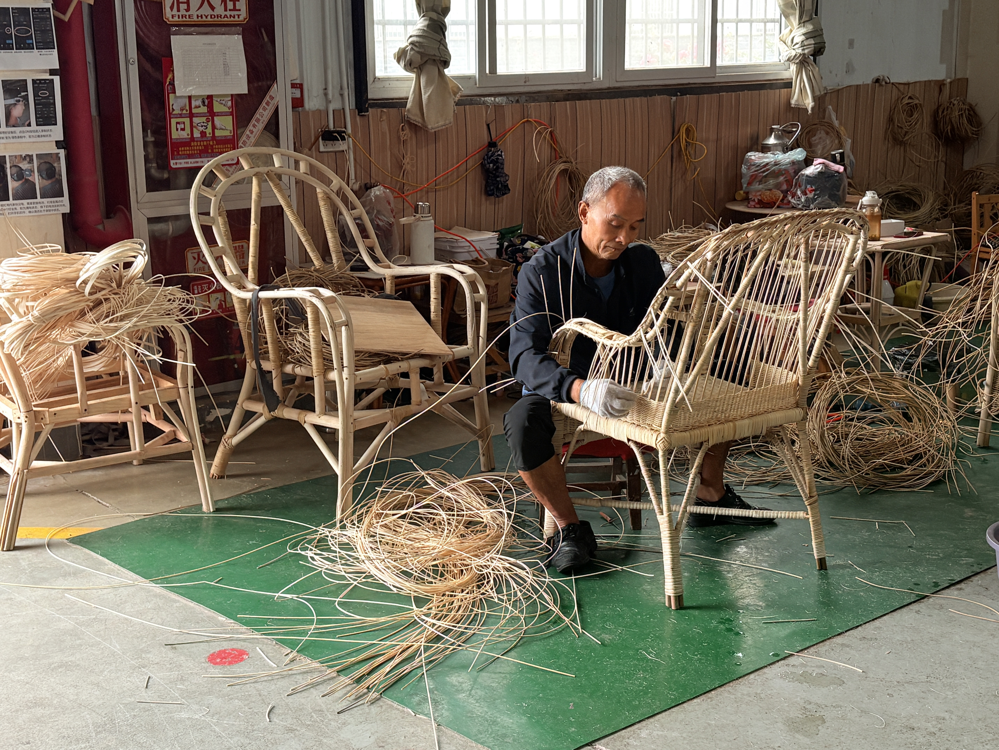
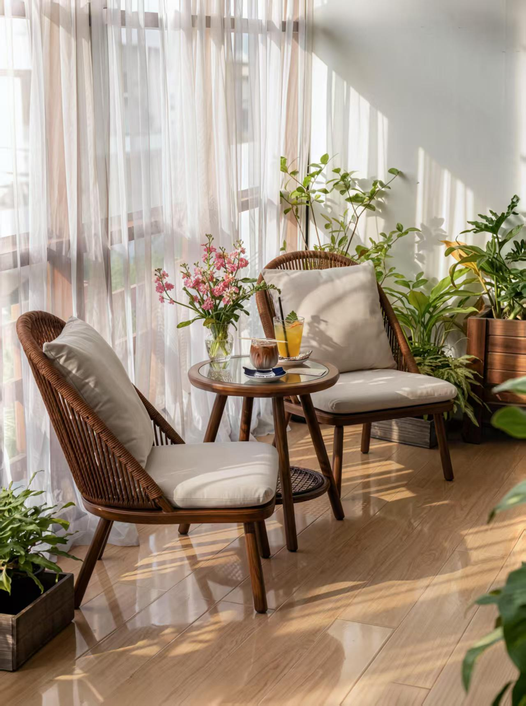
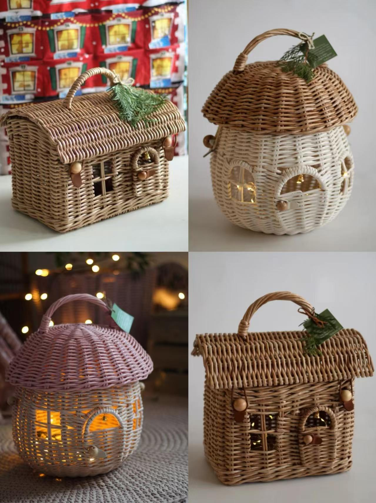

A / 一门手艺
技艺来自真实的人
传承不是一个抽象名词。它藏在经验、手势和一次次耐心的重复里，也藏在愿意把时间交给一件作品的人身上。
CHALLENGE CUP · HANZHONG RATTAN
汉中藤编技艺活化与乡村振兴实践
以非遗传承为根，以青年共创为桥，以产品转化和公众参与形成乡村价值回流。
01 / 时代坐标
汉中藤编扎根南郑黄官镇。它既承载着日常生活的手工记忆，也连接着非遗保护、特色产业与群众增收的现实命题。
02 / 藤编展览
所有影像与图片均来自真实走访、制作现场和产品记录。向下滚动，依次进入人物、工艺、现场与生活。
A / 一门手艺
传承不是一个抽象名词。它藏在经验、手势和一次次耐心的重复里，也藏在愿意把时间交给一件作品的人身上。

B / 一套工艺
从山场取材到作品成型，每一个步骤都由手感和经验共同完成。
观察藤条的韧性与纹理，选择适合当季的材料。
C / 真实现场
与传承人交流、和顾客对话、参与制作、记录传播。项目从现场出发，也把现场完整地留下。
FIELD NOTE / 访谈纪要
藤编纹理和自然质感具有第一眼吸引力，但多数游客此前只了解竹编，对汉中藤编的历史与工艺价值认知不足。
大件家具运输不便，小件文创选择有限，消费者难以找到适合日常购买与旅游携带的产品。
游客关注藤材是否受潮、是否易打理，说明产品养护信息与使用场景仍需被清楚说明。
游客建议开发杯垫、收纳盒、书签等轻量化文创，并通过短视频和研学体验呈现手工过程。团队据此将“产品轻量化、文旅融合、工艺科普”确立为后续调研方向。
FIELD NOTE / 基地访谈
基地集展示、生产、研学与文旅接待于一体，但完整编织技艺学习周期长、短期收益有限，青年传承仍面临断层。
大件家具占比较高，轻量化文创开发仍不足；游客参观较多，但品牌传播与购买转化仍需加强。
基地正通过研学体验、伴手礼开发和短视频传播拓宽路径，也期待与高校、研学机构共同挖掘文化内涵与产品设计。
这次访谈明确了“传承人短缺、产品创新不足、市场推广受限”的产业侧问题，也确认了文旅、设计与青年协同参与的现实基础。
FIELD NOTE / 匠人访谈
一件藤编要经过选藤、浸泡、劈藤、塑形、编织、打磨等环节；藤条软硬和湿度全凭经验判断，无法简单由机器替代。
匠人长期从事藤编，从农具、藤筐到藤制桌椅，手艺的变化始终建立在长年累月的练习之上。
车间以中年从业者为主，完整技艺学习需要数年，劳动强度大、收入回报有限，青年短暂体验多、长期入行少。
一线观察让团队看见：提升匠人收入、创新产品形式、让青年参与到长期学习中，才是藤编活态传承必须回应的现实问题。
FIELD NOTE / 电商访谈
基地通过抖音、视频号、短视频和直播讲述工艺与匠人故事，打破线下门店的地域限制；轻量化小件更适配线上传播。
手工编织视频观看度较高，但观看到下单仍有距离；大件家具运输、磕碰和售后成本高，线上成交难度更大。
内容同质化与专业编导、账号运营人手不足，限制了系列化内容的稳定产出和非遗IP的长期运营。
电商端的实践说明，非遗线上化不能只停留在卖货；需要文化内容、轻量化产品与青年运营力量协同，才能让传播和产业增收彼此支撑。
D / 藤编进入生活
从座椅、灯具到背包和收纳，产品是传统技艺与当代生活之间最具体的连接。
02 / PROJECT LOGIC
问题 · 项目闭环
四类真实访谈共同表明：藤编的审美吸引力已经存在，但认知科普不足、青年传承有限、轻量化产品不足、匠人收益、市场转化与线上运营能力受限仍是现实问题。
已完成：游客、基地工作人员、一线匠人与电商负责人四类访谈，覆盖消费、运营、生产与传播端。
03 / VALUE NETWORK
项目的价值不止在一件产品，而在传承人、青年、消费者和乡村之间重新建立关系。
ROLE 01
以传承人为知识主体，记录经验、呈现过程，让作品价值回到真正创造它的人手里。
04 / PUBLIC PARTICIPATION
生成一张项目共创卡，把你支持的角色和祝愿带走。项目的终点不是展示，而是让更多人愿意理解、使用并持续选择乡村手艺。

